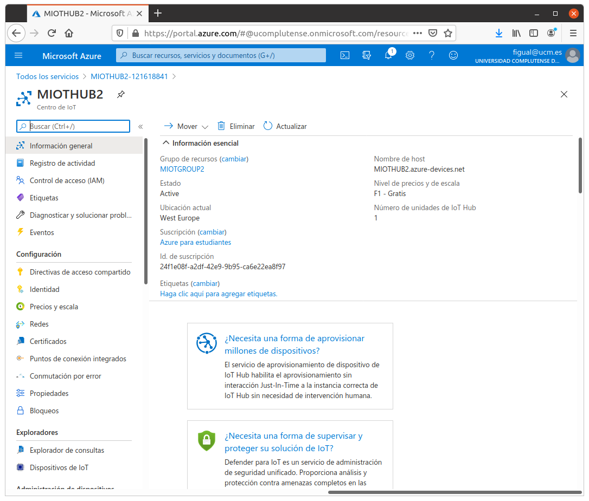
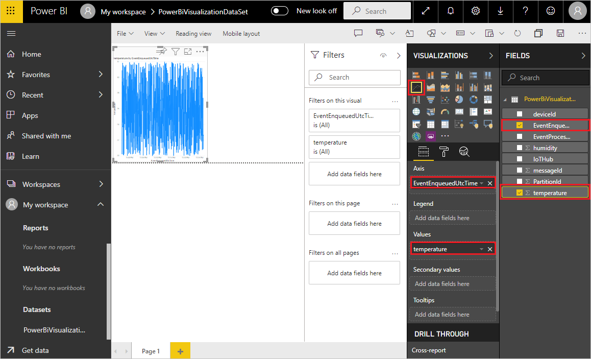

Práctica 6. Frameworks IoT y Cloud
Objetivos
La práctica presenta los pasos esenciales que permiten hacer interactuar un dispositivo (ESP32) con una infraestructura IoT en la nube. Aunque en este caso utilizaremos Microsoft Azure, los pasos tanto en configuración remota como a nivel de nodo son muy similares a los que deberías seguir para otras infraestructuras (Amazon AWS, Google IoT Core, Aliyun IoT, Tencent Iot o cualquier otro). La documentación de IDF proporciona ejemplos detallados para cada uno.
El objetivo de la práctica es desplegar un sistema de monitorización remota en Microsoft Power BI, que permita visualizar datos de telemetría emitidos vía MQTT por el dispositivo a través de un gateway en la nube (llamado en el caso de Azure IoT Hub).
Introducción
El SDK ESP Azure IoT es una infraestructura basada en el SDK de Azure par IoT con soporte para C (azure-iot-sdk-c) portado sobre ESP-IDF para dar soporte al ESP32. Además, proporciona un conjunto de ejemplos que permiten observar y simplificar el proceso de configuración y conexión al framework Azure IoT Hub.
Preparación del firmware en el ESP32
En la presente práctica utilizarás una placa ESP32 que actuará como cliente ESP32, con un firmware personalizado que implementa la lógica de conexión e interacción con Azure. En primer lugar:
-
Configura una instalación de ESP IDF tal y como has hecho en prácticas anteriores. Si ya la has configurado y es funcional, no es necesario ninguna reinstalación ni reconfiguración.
-
En un directorio independiente, clona el repositorio de ESP Azure (fíjate en la opción
--recursive, que es imprescindible):
git clone --recursive https://github.com/espressif/esp-azure.git
Configuración de Microsoft Azure
Los siguientes pasos requieren el uso de una cuenta creada con Microsoft Azure. Los estudiantes UCM pueden adherirse al programa académico, que otorga suficiente crédito para realizar este tipo de prácticas. Asegúrate de acceder al portal de MS Azure y utilizar tu usuario y credenciales UCM para ello.
Creación de un Centro de IoT (IoT Hub)
En la página principal de Azure, selecciona la opción "Crear un Recurso" (en el menú de la parte superior izquierda de la pantalla) y a continuaición selecciona IoT Hub en cuadro "Buscar en Marketplace".
Selecciona Iot Hub en los resultados de la búsqueda, y a continuación "Crear".
En la pestaña Aspectos Básicos, completa los campos de la siguiente forma:
- Suscripción: selecciona la suscripción que desees usar (por defecto, debería aparecer Azure para estudiantes).
- Grupo de recursos: crea un nuevo grupo de recursos seleccionando la opción
Crear nuevo, y otórgale el nombre que desees, por ejemplo
MIOTGROUP. - Región: selecciona la región más cercana a ti (por ejemplo, Oeste de Europa).
- Nombre: por último, da un nombre al hub, por ejemplo
MIOTHUB.
Deja los parámetros por defecto en la pestaña Redes, y elige como Nivel de precios F1 en la pestaña Administración. Asigna las etiquetas que desees y finalmente confirma la creación del Centro de IoT. Si todo ha ido bien, verás un resumen del recurso creado y podrás acceder a él pinchando en "Ir al recurso". Verás una pantalla similar a la siguiente:

En la sección de Configuración, elige Directivas de acceso compartido
y crea una nueva directiva llamada, por ejemplo MIOTPOLICY, con permisos
de lectura y escritura en Registro, y conexión de servicios y dispositivos.

Las políticas de lectura y escritura en registro otorgan derechos de acceso al registro de indentidades de Azure. Estos permisos serán utilizados por servicios de back-end para gestionar las identidades de dispositivos, por ejemplo. La política de conexión de servicio otorga permisos para acceder a endpoints de servicio. Los servicios de back-end podrán enviar y recibir mensajes de dispositivos. La política de conexión de dispositivo otorga permisos para enviar y recibir mensajes usando el IoT Hub.
Una vez creada, selecciónala y copia la Cadena de conexión principal (clave principal) que aparece en pantalla. No es necesario que la muestres, puedes usar el botón de copia directamente. Apunta esta cadena en un fichero de texto. Esta es la clave de acceso para el Hub.
Registro de un nuevo dispositivo
A continuación, crearemos una nueva identidad de dispositivo en el Registro de Identidades del hub IoT que acabas de crear. Para ello:
-
En el menú de navegación, abre la opción "Dispositivos de IoT" y selecciona Nuevo para crear un nuevo dispositivo.
-
Dale el nombre que quieras (por ejemplo MIOTDEVICE), pero recuérdalo, y selecciona Guardar.
-
Una vez creado, selecciónalo y copia la Cadena de conexión principal que aparece en pantalla. No es necesario que la muestres, puedes usar el botón de copia directamente. Apunta esta cadena en un fichero de texto. Esta es la clave de acceso para el dispositivo.
Instalación de el cliente Azure
Para instalar el cliente Azure en Linux, usa la orden:
curl -sL https://aka.ms/InstallAzureCLIDeb | sudo bash
Tienes más opciones de instalación en la página.
Una vez instalado, desde tu terminal, ejecuta el comando
az para comprobar que la instalación fue correcta. Deberías
ver una salida similar a esta:
az
Welcome to Azure CLI!
---------------------
Use `az -h` to see available commands or go to https://aka.ms/cli.
...
Instala la extensión del cliente para Azure IoT:
az extension add --name azure-iot
Ingresa en el sistema ejecutando (se te pedirá autenticación en navegador, introduce tus credenciales):
az login
Para usar el cliente como método de creación de un dispositivo, puedes utilizar la siguiente orden:
az iot hub device-identity create -n [IoTHub Name] -d [Device ID]
Tarea
Crea un nuevo dispositivo, distinto al que creaste anteriormente, en
tu hub. Después, obtén su cadena de conexión usando la orden
az iot hub device-identity connection-string show -n [IoTHub Name] -d [Device ID]. Comprueba que, efectivamente, la creación del dispositivo es
visible en la plataforma web.
Monitorización de valores de telemetría del dispositivo y eventos
Para observar los datos intercambiados entre el dispositivo y el hub IoT desde línea de ocmandos, puedes usar la orden:
az iot hub monitor-events -n [IoTHub Name] --login 'cadena de conexion'
(Ten en cuenta que las comillas simples deben estar presentes).
Despliegue de un cliente MQTT en el ESP32
Dirígete al ejemplo situado en el directorio
esp-azure/examples/iothub_client_sample_mqtt. En él, vamos a trabajar con cualquiera
de los dos dispositivos que has creado en tu Hub. En cualquier caso,
muestra su cadena de conexión principal. Deberás ver un valor
de devolución de tipo:
{
"connectionString": "HostName=<azure-iot-hub-name>.azure-devices.net;DeviceId=<azure-iot-device-id>;SharedAccessKey=<base64-encoded-shared-access-key>"
}
Deberás apuntar (copiar) únicamente la parte que comienza por HostName=..., hasta el final de la cadena. No incluyas las comillas dobles.
Ejecuta make menuconfig. En el menú Example Configuration,
configura las credenciales de acceso a tu red WiFi, así como la
cadena de conexión que copiaste en la opción
IOT Hub Device Connection String.
A continuación, ejecuta la orden de compilación, flasheado y monitorización:
make flash monitor
En una ventana separada, puedes monitorizar los eventos IoT en tu hub usando su cadena de conexión:
az iot hub monitor-events -n [IoTHub Name] --login 'Cadena de conexión primaria'
Una vez arrancado y conectado a Internet el dispositivo comenzará a publicar mensajes MQTT. El monitor que has lanzado los mostrará como:
{
"event": {
"origin": "<azure-iot-device-id>",
"payload": "{\"deviceId\":\"MIOTDEVICE\",\"windSpeed\":13.00,\"temperature\":22.00,\"humidity\":67.00}"
}
}
Observa que incluye tres valores: velocidad del viento, temperatura y humedad.
Tarea
Analiza el código y observa, en la tarea principal, el uso que hace de la API de Azure SDK C, así como el punto en el que genera el mensaje MQTT (y sus valores).
También es posible enviar mensajes al dispositivo directamente desde línea de comandos (observa que estos mensajes se envían vía red, no vía puerto serie, a través del Hub). Por tanto, puedes hacerlo desde cualquier punto, no obligatoriamente desde tu PC:
az iot device c2d-message send -d [Device Id] -n [IoTHub Name] --data [Data_to_Send]
Nota
Si todo ha ido bien, en este punto deberías estar observando cada uno de los mensajes enviados por tu ESP32 al hub desde el monitor.
Visualización de datos en Microsoft PowerBI
En esta parte, el objetivo es visualizar los datos enviados por tu sensor (temperatura, humedad y velocidad del viento, en la herramienta de visualización PowerBI de Microsoft. Aunque PowerBI suele utilizarse en entornos de inteligencia de negocio, resulta también útil para reportar datos de cualquier elemento de Azure, incluido el IoT Hub.
Nota
Necesitarás una cuenta de acceso gratuita a PowerBI, que puedes crear con tus credenciales de usuario UCM directamente en la página del producto.
Adición de un grupo de consumidores
Los grupos de consumidores proporcionan vistas independientes en la secuencia de eventos que permiten a las aplicaciones y a los servicios de Azure consumir datos de forma independiente desde el mismo punto de conexión del centro de eventos. Vamos a agregar un grupo de consumidores al punto de conexión integrado de tu instancia de IoT Hub que se usará posteriormente para extraer datos del punto de conexión.
Para agregar un grupo de consumidores a su centro de IoT, sigue estos pasos:
-
En el portal de Azure, abre tu IoT Hub.
-
En el panel izquierdo, selecciona Puntos de Conexión Integrados, luego Eventos en el panel superior derecho, y escribe un nombre en Grupos de consumidores (por ejemplo,
MIOTGROUP). A continuación, selecciona Guardar.
Creación, configuración y ejecución de un trabajo de Stream Analytics
Comencemos creando un trabajo de Stream Analytics. Después de crear el trabajo, definiremos las entradas, las salidas y la consulta que se usará para recuperar los datos.
Creación de un trabajo de Stream Analytics
-
En el portal de Azure, selecciona Crear un recurso -> Internet de las Cosas -> Stream Analytics Job.
-
Escribe la siguiente información para el trabajo:
- Nombre del trabajo: Nombre que se asigna al trabajo; debe ser único (por ejemplo,
MIOTJOB). - Grupo de recursos: Usa el mismo grupo de recursos que definiste para el centro de IoT (por ejemplo,
MIOTGROUP). - Ubicación: Usa la misma que para el grupo de recursos.
- Nombre del trabajo: Nombre que se asigna al trabajo; debe ser único (por ejemplo,
-
Selecciona Crear.
Adición de una entrada al trabajo de Stream Analytics
- Abre el trabajo de Stream Analytics.
- En Topología de trabajo, selecciona Entradas.
-
En el panel Entradas, selecciona Agregar entrada de flujo, y a continuación, selecciona IoT Hub en la lista desplegable. En el panel de la nueva entrada, escribe la siguiente información:
- Alias de entrada: Un alias único para la entrada (por ejemplo,
MIOTINPUT). - Seleccionar centro de IoT de entre las suscripciones: Selecciona esta opción.
- Suscripción: Usa la suscripción que has utilizado en el resto de la práctica.
- IoT Hub: Selecciona la instancia de tu Hub IoT tal y como has hecho en el resto de la práctica.
- Punto de Conexión: Selecciona Mensajería.
- Nombre de la directiva de acceso compartido: Selecciona el nombre de la directiva de acceso compartido que quieras que utilice el trabajo de Stream Analytics para tu centro de IoT. Para esta práctica, puedes seleccionar service. La directiva service se crea de forma predeterminada en los centros de IoT nuevos y concede permiso de envío y recepción para los puntos de conexión de la nube que expone el centro de IoT.
- Clave de directiva de acceso compartido: Se rellena automáticamente en función del nombre de directiva de acceso compartido.
- Grupo de consumidores: Selecciona el gruop de consumidores que se creó anteriormente.
- Alias de entrada: Un alias único para la entrada (por ejemplo,
El resto de campos pueden dejarse en sus valores predeterminados. Finalmente, selecciona Guardar.
Adición de una salida al trabajo de Stream Analytics
-
En Topología de trabajo, selecciona Salidas.
-
En el panel Salidas, selecciona Agregar y Power BI.
-
En el panel Power BI: Nueva salida panel, selecciona Autorizar y sigue las indicaciones para iniciar sesión en tu cuenta de Power BI.
-
Una vez que hayas iniciado sesión en Power BI, escribe la siguiente información:
- Alias de salida: alias único para la salida, por ejemplo
MIOTOUTPUT. - Área de trabajo de grupo: selecciona el área de trabajo de grupo de destino.
- Nombre del conjunto de datos: escribe un nombre para el conjunto de datos, por ejemplo
MIOTDATASET. - Nombre de la tabla: Escribe un nombre de tabla, por ejemplo
MIOTTABLE. - Modo de autenticación: Deja la opción predeterminada.
- Alias de salida: alias único para la salida, por ejemplo
Configuración de la consulta del trabajo de Stream Analytics
- En Topología de trabajo, selecciona Consulta.
- Reemplaza [YourInputAlias] por el alias de entrada del trabajo.
- Reemplaza [YourOutputAlias] por el alias de salida del trabajo.
- Selecciona Guardar consulta.
Ejecución del trabajo de Stream Analytics
En el trabajo de Stream Analytics, selecciona Información general y, a continuación, elige Iniciar->Ahora->Iniciar. Una vez que el trabajo se inicia correctamente, su estado cambia de Detenido a En ejecución.
Creación y publicación de un informe de Power BI para visualizar los datos
En los pasos siguientes se muestra cómo crear y publicar un informe mediante el servicio Power BI:
- Asegúrate de que la aplicación (tu ESP32) está ejecutándose.
- Inicia sesión en Power BI.
- Selecciona tu área de trabajo (workspace).
- Selecciona Conjunto de datos usando el conjunto de datos que creaste en pasos anteriores (corresponde al que creaste en el momento de crear la salida para el trabajo de Stream Analytics.
- Para dicho conjunto de datos, selecciona Agregar Informe (el primer icono a la derecha del nombre del conjunto de datos.
- Crea un gráfico de líneas para mostrar la temperatura en tiempo real en un período determinado. Para ello:
- En el panel Visualizaciones de la página de creación de informes, selecciona el icono de gráfico de líneas para agregar un gráfico de líneas.
- En el panel Campos, expande la tabla que especificó en el momento de crear la salida para el trabajo de Stream Analytics.
- Arrastra EventEnqueuedUtcTime (Hora UTC de evento en cola) al Eje en el panel Visualizaciones.
- Arrastra temperature (temperatura) a Valores.
Se ha creado un gráfico de líneas. El eje X muestra la fecha y hora en la zona horaria UTC. El eje Y muestra la temperatura del sensor:

Tarea
Añade ahora información sobre humedad y velocidad del viento y refresca (actualiza) la visualización.
Tarea entregable
En esta práctica, simplemente se pide que entregues alguna evidencia (por ejemplo, una captura de pantalla con tu ESP32 femitiendo eventos y una captura simultánea de PowerBI mostrándolos) del correcto funcionamiento de los pasos listados. Opcionalmente, se puede añadir, como información emitida desde el ESP32, valores reales de temperatura obtenidos desde un sensor en el ESP32.